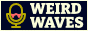

Booth
Control your queue here—you can also add shows or series from the Archive.
Queue
Data
The data below updates automatically every time the playlist changes.
To save your data, copy the text (you can also click the “Copy” button to copy it to clipboard) and paste it somewhere safe.
To import your data, paste the data into the box, then click the “Import” button.
The following show ID(s) are invalid, but there may be similar valid IDs you can copy and paste into your data:
You don't have to delete the import error messages from the data; they're removed automatically when you try to import the data.
Archive
This list includes information about every show available on the site.
News
This is a preview of the Weird Waves news feed. Read in your browser or subscribe by copying its URL into your feed reader:
https://weirdwaves.net/feed.xml
New to feeds? They let you follow sites! Read About Feeds for more info.
About
Weird Waves is a curated radio play and audiobook archive of horror, sci-fi, fantasy, and weird fiction! Find shows in the Archive, check or re-order your queue in the Booth, and listen to them in the Player. Have fun!
The Archive contains series and shows.
Content notes
The Archive has content notes for individual shows, but there's a few general ones: death and worse fates, and implicit bigotry in the older series.
Small details
- Show numbers in the LibriVox selection
-
The LibriVox audiobooks here are a tiny selection from that site, numbered in the order I added them here. The reason there are gaps (e.g. no “LibriVox selection 6”) is because I've occasionally removed shows from the Archive, but renumbering would throw off any saved queues.
- Bangers (the “+ Banger” button)
-
This is an extra layer of curation. These are, in my opinion, the best shows in the Archive—about the top quarter. I've tried to pick diverse kinds of shows from as many series as possible. My opinions change now and then.
- Colour-blindness themes
-
Six themes (Coalgas, Root, Natron, Gauze, Mycelia, and Cellar) are based on other themes under simulated colour-blindness. They're not necessarily better for people with colour deficiencies, though most of the themes have good contrast and should be legible to almost anyone.
Streaming
This section covers how to use Weird Waves as a livestream widget via broadcast software like Open Broadcaster Software (OBS). Most of this only applies if you want to show Weird Waves visually on-stream. Either way, check the main Settings too.
Making a widget
- Create a browser source.
- Set its URL to
https://weirdwaves.net/. - Delete its default custom CSS.
- Resize and crop it.
- Right-click it and select “Interact” to use it just like you are now.
Optionally, replace the custom CSS with the following to add space above and below the player, to more easily isolate it in an overlay:
#player-container {
margin-block: 100vh;
}Customising the style
Set the theme to “Dark” and font to “Serif”, then add this custom CSS:
[data-theme="dark"] {
--fore-colour: your foreground colour;
--back-colour: your background colour;
--hot-colour: your hot colour;
--cold-colour: your cold colour;
}
[data-font="serif"] {
--font-stack: your font;
}Replace your * colour with your own colour values. These can be any valid CSS colours: hex codes, RGB values, HTML colour names, etc. Replace your font with the name of any font installed on your computer. If the name includes a space, wrap the whole name in quotes (e.g. "Comic Sans").
Copyright?
All LibriVox recordings are in the public domain. The copyright status of old radio broadcasts is murky, but virtually any person or organisation who could press a claim is long dead or gone, and almost nobody cares about the atom-thin penny shavings you'd make from streaming ancient, commercially-irrelevant radio broadcasts on Twitch.
If you're still concerned, switch on the following toggle to exclude certain series when adding random shows or the entire archive to the queue: CAS selection, The Mercury Theatre, Mindwebs, Nightfall, and Seeing Ear Theater.
Some of these (The Mercury Theatre and Nightfall) are muted on Twitch due to copyright claims. The others are possible, but unconfirmed, risks.
Settings
Control how Weird Waves looks and functions here.
-
Player
-
Queue
-
Content notes
-
Site theme
Note: Themes have no effect on the page in forced-colours or high-contrast mode.
-
Site font
Contact
Got questions, feedback, requests?
Links
If you like Weird Waves, you might like some of these places too:
Indie web radio
- Radio is a Foreign Country
- Polushon
- HBR1 - Music on Futurenet
- NoLife-Radio
- asahidenpa
- KP Radio
- Repetitive Strain
- Nightwave Plaza
- Bot Radio
- bringthenoise
- Jungle Train
- SomaFM
- RektNetwork
- MailTape
- Sanctuary Radio
- FluteSpell
Old Time Radio (OTR) info
- OTR Plot Spot
- The Digital Deli (via Wayback)
- Awake at Midnight
- Escape and Suspense!
- The Vintage Radio Place
- Old Time Radio Researchers
Toys, tools, apps, games
- AC-chan (&)
- Yumi Nikki Online Project
- Dust & Scratches
- Mydora
- Vitreous
- The House of the Living
- Spiral House
- A Blinding Void
- Corpus
- moss as texture as space folding onto itself
- The Barnacle Goose Experiment
- Don't Escape 1, 2, 3
- Looming
- Small Worlds
- suteF
- Man, Lord of Machinery
- i-land
- Neurokino Retrograde
Streamers
- Ecdysis (archive)
- ecto (archive)
- Grimmi (archive)
- John Wolfe (live)
- VoidBurger (archive)
- Kliffoth (archive)
- Vesper (archive)
- SuperGreatFriend (archive)
Webcomics
- Watashi
- A Ghost Story
- Bybloemen
- Curse of the Eel
- Kill Six Billion Demons
- Nocturne
- Owl People
- All Night Laundry
- Demon's Mirror
- Rice Boy
- False Positive
- Broodhollow
- Mare Internum
- The Last Halloween
- Stagtown
- Bogleech
- E. M. Carroll
- Super Catgirl Tapeworm
- Ten Earth Shattering Blows
Anything else
- White Desert
- Home Video Horrors
- The Horror Gif Necronomicon
- NGMI.work
- Beyond Dream's Doors
- PseudoPod
- guru
- Laird Barron Mapping Project
- Eldritch Dark
- The End of the Earth
- Now we are all… // Journey
- Puparium
- Gateway to Darkness
- meatfang
- Along the Shore
- grandma
- Neo-Pangaea
- Hellmouth
- Sammy Lux
- Hemwick Lane
- tfpXE
- bats' book blog
Button
- 
Credits
Want to know where things came from?
Shows
check the Archive
Fonts
serif font subset from Bitter (Open Font License) by Sol Matas
sans-serif font subset from Fira Sans (Open Font License) by Carrois Type Design
code font subset from Fira Mono (Open Font License) by Carrois Type Design
Hosting
Welcome to Weird Waves!
Weird Waves is an audio horror site where you can explore the classics and hidden gems of 20th-century radio plays and public-domain audiobooks.
Why not try the schedule for the week starting :